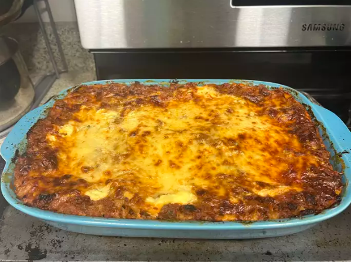

Lasagna

Description
Beautiful picture of a lasagna fresh out of the oven, with crispy cheese seared on the top of it.
Ingredients
- 1 pound sweet Italian sausage
- 3/4 pound lead ground beef
- 1/2 cup minced onion
- 2 gloves garlic, minced
- 28 ounce can crushed tomatoes
- 13 ounce canned tomato sauce
- 12 ounce tomato paste
- 1/2 cup water
- 2 tablespoons white sugar
- 4 tablespoons chopped fresh parsley
- 1 1/2 teaspoons dried basil leaves
- 1 1/2 teaspoons salt
- 1 teaspoon Italian seasoning
- 1/2 teaspoon fennel seeds
- 1/4 teaspoonn ground black pepper
- 12 lasagna noodles
- 16 ounce ricotta cheese
- 1 egg
- 3/4 pound sliced mozzarella cheese
- 3/4 cup grated Parmesan cheese
Cooking Steps
- Gather all your ingredients.
- Cook sausage, ground beef, onion, and garlic in a Dutch overn over medium heat until well browned.
- Stir in crushed tomatoes, tomato sauce, tomato paste, and water. Season with sugar, 2 tablespoons parsely, basil, 1 teaspoon salt, Italian seasoning, fennel seeds, and pepper. Simmer, convered, for about 1 1/2 hours, stirring occasionally.
- Bring a large pot of lightly salted water to a boil. Cook lasagna noodles in boiling water for 8 to 10 minutes. Draing noodles, and rinse with cold water.
- In a mixing bowl, combine ricotta cheese with egg, remaining 2 tablespoons of parsley, and 1/2 teaspoon salt.
- Preheat oven to 375 degrees F.
- To assemble, spread 1 1/2 cups of meat sauce in the bottom of a 9/13-inch banking dish. Arrange 6 noodles lengthwise over the meat sauce, overlapping slightly. Spread with 1/2 of the ricotta cheese mixture. Top with 1/3 of the mozzarella chees slices. Spoon 1 1/2 cups meat sauce over mozzarella, and sprinkle with 1/4 Parmesan cheese.
- Repeat layers, and top with remaining mozzarella and Parmesan cheese. Cover with foil: to prevent sticking, either spray foil with cooking spray or make sure foil does not touch the cheese.
- Bake in the preheated oven for 25 minutes. Remove the foil and bake for an additional 25 minutes.
- Rest lasagna for 15 minutes before serving.
- Enjoy
Homepage